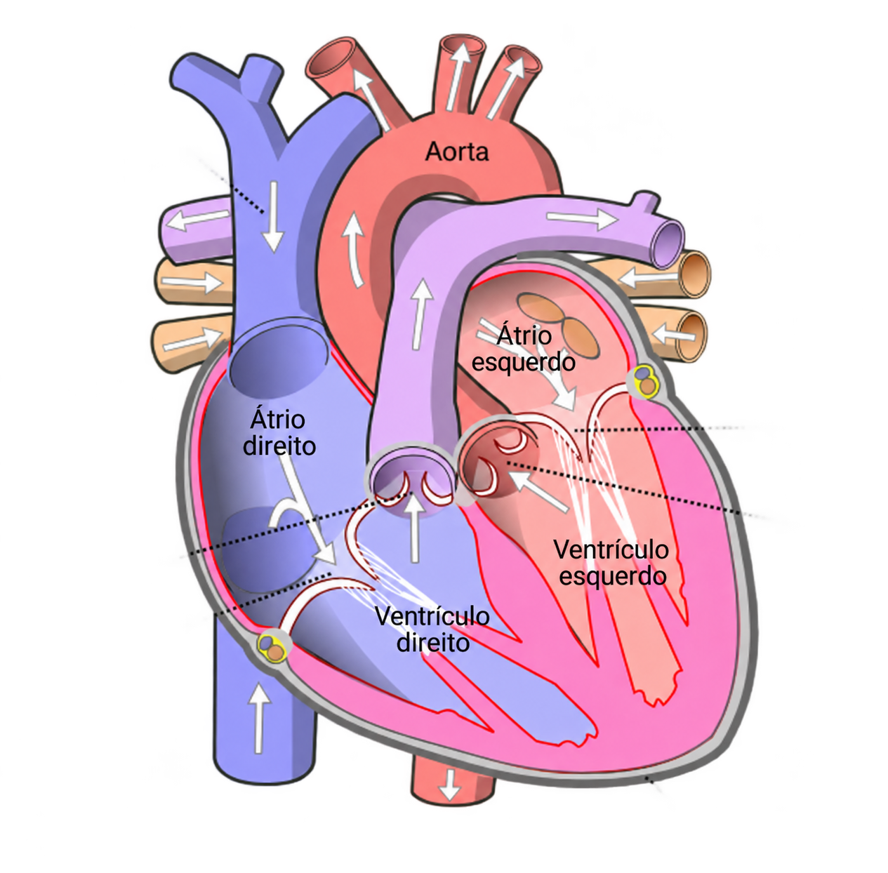

01
Sistema Circulatório
Também chamado cardiovascular, é a rede de transporte do corpo. Funções: levar oxigênio e nutrientes a todas as células, recolher gás carbônico e resíduos, transportar hormônios, defender o organismo (glóbulos brancos), coagular o sangue em ferimentos e ajudar a regular a temperatura.
- Coração: bomba muscular com 4 cavidades (2 átrios e 2 ventrículos) e valvas que impedem o refluxo.
- Artérias: levam o sangue do coração para o corpo; paredes grossas e elásticas. A maior é a aorta.
- Veias: trazem o sangue de volta ao coração; possuem válvulas.
- Capilares: vasos finíssimos onde ocorrem as trocas com as células.
- Sangue: plasma, hemácias (oxigênio), leucócitos (defesa) e plaquetas (coagulação).
Há duas circulações: a pequena (coração → pulmões → coração), que oxigena o sangue, e a grande (coração → corpo → coração).
100 milbatimentos por dia
~5 Lde sangue no adulto
100 mil kmde vasos